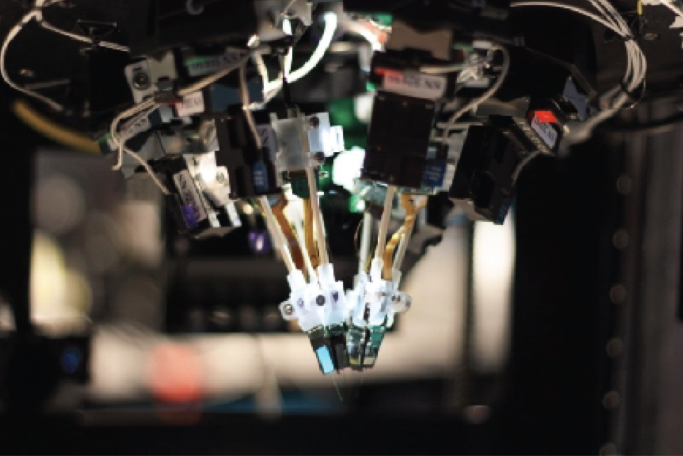
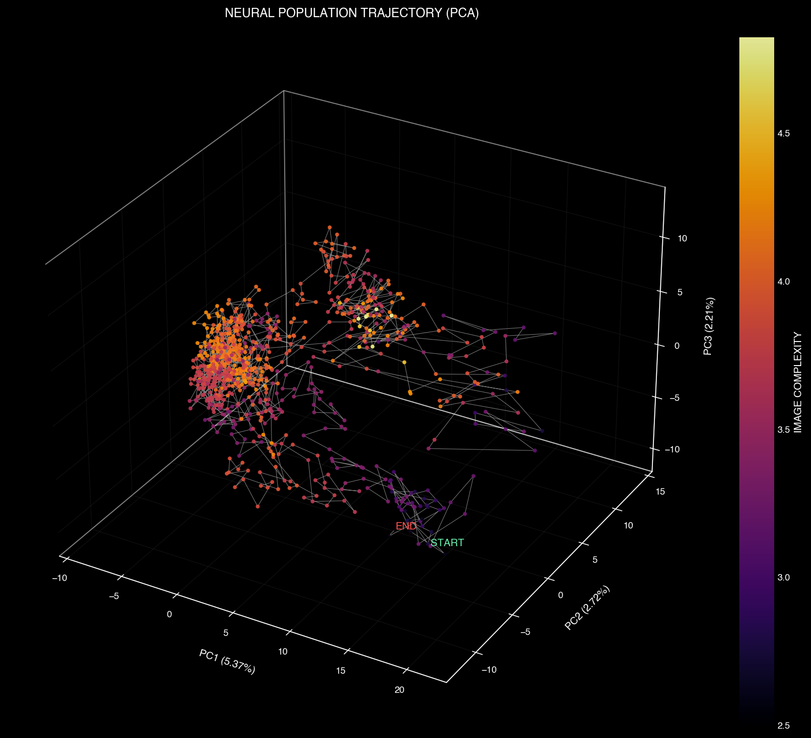
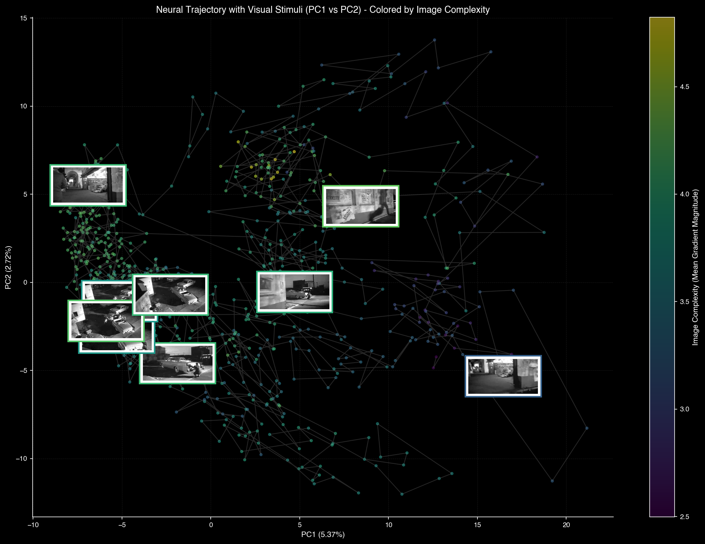
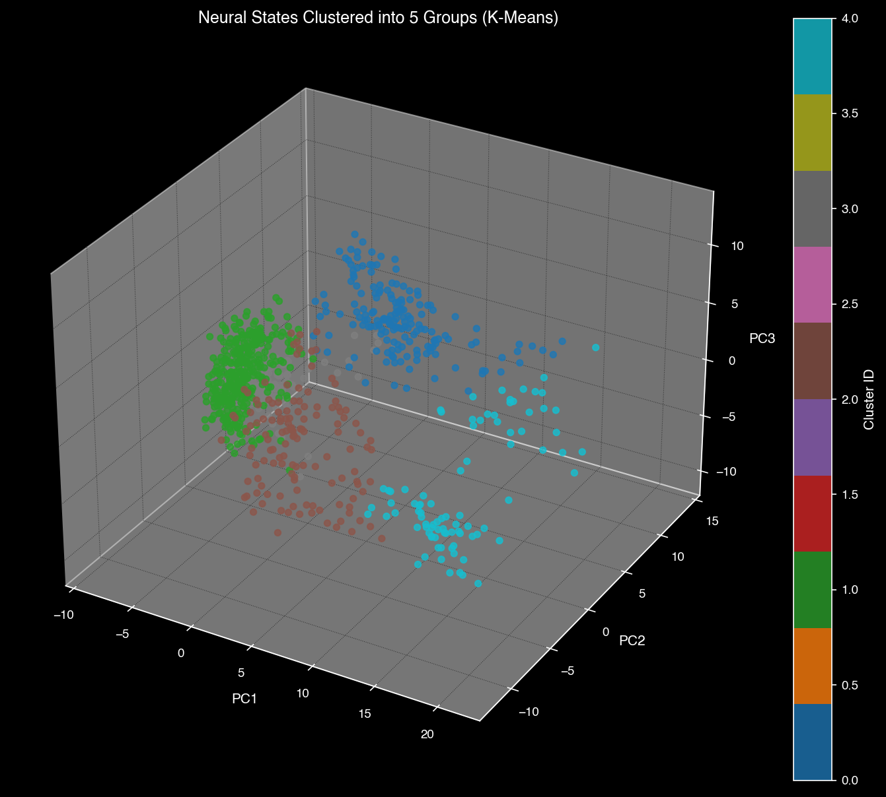
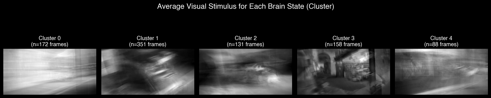
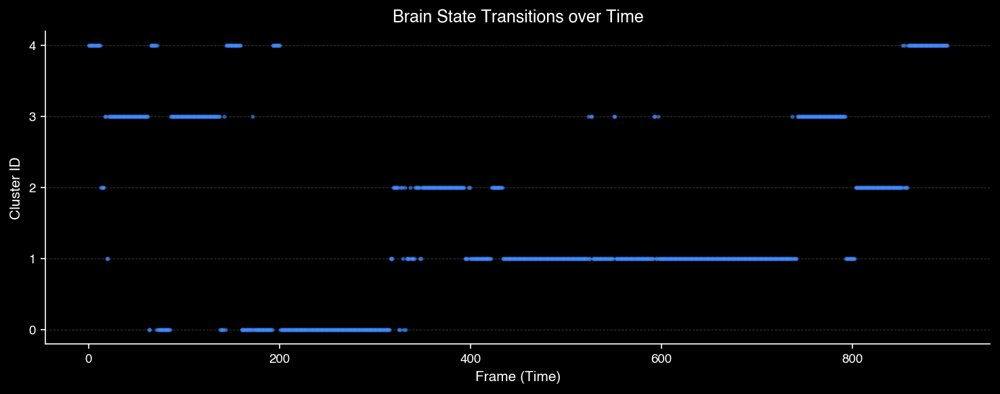

Overview - Target Areas
This dataset is part of an effort to understand how neurons distributed across many brain regions coordinate to produce complex behaviors (e.g., reading) by capturing the spiking activity of many neurons simultaneously. In particular, this "Visual Coding : Neuropixels" dataset is a systematic survey of spiking activity in the mouse visual system and beyond.
Visual Stimulus - Natural Movie
Natural scene video presented to the mouse during neural recording
Neuropixels Probes - Multi-Region Recording

Experimental Configuration

Probe Position in Brain Regions
About Neuropixels Probes
Neuropixels probes are high-density silicon electrodes capable of recording from hundreds of neurons simultaneously across multiple brain regions. Each probe contains 384 recording sites distributed along a 10mm shaft, allowing researchers to capture neural activity from different cortical layers and subcortical structures in a single recording session.
Experimental Validation Through Repeated Trials
To ensure the reliability of our neural recordings, the same natural movie stimulus was presented 10 times across different experimental sessions. This repetition allows us to assess both the consistency of neural responses and the stability of the extracted latent variables across trials and brain regions.
Canonical Correlation Analysis (CCA)
What is CCA?
Canonical Correlation Analysis (CCA) is a statistical method that identifies relationships between two sets of multidimensional variables. In our context, we use CCA to:
- Compare neural activity patterns across different recording sessions
- Measure the similarity of latent variables extracted from different brain regions
- Quantify how consistently the same brain regions respond to repeated stimulus presentations
CCA computes correlation coefficients between paired canonical variables, where higher correlations indicate greater stability and reproducibility of the neural representations.
Results: High Stability Across Sessions and Regions

Cross-Session CCA: Correlation matrix showing similarity between latent variables across different experimental sessions

Regional Stability: CCA coefficients across brain regions demonstrating consistent neural encoding
Key Finding: The high CCA correlation values across all 10 experimental sessions and multiple brain regions demonstrate that our neural recordings are highly stable and reproducible. This stability confirms that the extracted latent variables represent genuine, consistent neural encoding of the visual stimulus rather than noise or experimental artifacts.
From Discrete to Continuous: Spike Filtering
Neural spike data is inherently discrete and binary (1 = spike, 0 = no spike), creating a sparse representation that poses challenges for multi-dimensional analysis techniques like PCA and UMAP. To enable these dimensionality reduction methods, we must first transform the binary spike trains into continuous-valued signals.
Gaussian Filtering Process
Raw spike data represented as binary sequences (e.g., 10101001...) where 1 indicates a spike event and 0 indicates no activity
Apply a Gaussian kernel to smooth the discrete spike train, creating a continuous firing rate function that captures temporal dynamics
Transformed data retains spike timing information while providing smooth, continuous values suitable for dimensional analysis

Spike Filtering Transformation: Comparison of raw binary spike trains (top) and their Gaussian-filtered continuous representations (bottom). The filtering process preserves temporal structure while enabling continuous mathematical operations necessary for PCA, UMAP, and manifold analysis.
Why Gaussian Filtering?
- Preserves temporal dynamics and spike timing information
- Removes sparsity that can distort distance metrics in high-dimensional space
- Creates smooth, differentiable signals compatible with gradient-based optimization
- Biologically plausible: mimics synaptic integration time constants
PCA (Principal Component Analysis)
PCA is a method that simplifies complex data by finding the most important patterns inside it. Imagine you have data with hundreds of variables—PCA looks for the directions in which the data changes the most and uses those directions to create a simpler version of the data.
Making High-Dimensional Data Understandable
Neural population activity exists in extremely high-dimensional space (hundreds of neurons firing simultaneously). PCA allows us to capture the essential structure of this data in just a few dimensions that humans can visualize and interpret.
By projecting the preprocessed continuous spike data onto the first three principal components (PC1, PC2, PC3), we transform incomprehensibly complex neural dynamics into a 3-dimensional space we can observe, analyze, and understand.
Visualization: PC1, PC2, PC3

3D PCA Projection: Neural population activity visualized in the space defined by the first three principal components. Each point represents the neural state at a specific time, revealing the trajectory of brain activity as the mouse watches the natural movie.

PCA with Video Frame Overlay: The same PCA space overlaid with corresponding video frames from the stimulus. This reveals how different visual features in the movie map to distinct regions of neural state space.
Key Achievement: Through PCA, we have successfully brought the high-dimensional neural data into a comprehensible 3-dimensional space (PC1-PC3). What was once an abstract cloud of hundreds of neural firing rates is now a visible, interpretable geometric structure that we can explore and analyze. This dimensionality reduction is the crucial first step toward understanding how the brain encodes visual information.
K-Mean Clustering with Stimulus Average
To further understand the relationship between neural states and visual input, we applied k-means clustering to the PCA-transformed neural activity. This allows us to identify distinct brain states and link them to specific visual features in the stimulus.

K-Means Clustering in PCA Space: Neural activity points are grouped into distinct clusters, each representing a characteristic brain state. The colors indicate different clusters that correspond to different types of visual processing.

Cluster-Averaged Video Frames: For each neural cluster, we averaged the corresponding video frames to reveal the typical visual patterns that drive that particular brain state.

Brain State Classification: Analysis showing how different portions of the urban scene relate to the organization of the neural manifold and distinct processing states.
▲ K-Mean Cluster with Stimulus Average
After performing k-means clustering on the PCA-transformed neural activity, we averaged the video frames corresponding to each cluster. This produced representative stimulus segments that capture the typical visual patterns associated with distinct neural states, allowing us to compare how different portions of the urban scene relate to the organization of the neural manifold.
This analysis reveals that the brain doesn't process the movie as a continuous stream, but rather organizes visual information into discrete, interpretable states—each corresponding to particular features like luminosity, complexity, motion, or scene composition.
Re-coloring PCA Space by Visual Features
To investigate how specific visual properties relate to neural organization, we re-colored the same PCA space using different visual feature metrics. This approach allows us to see whether neural states cluster according to interpretable visual characteristics.

Luminosity-Based Coloring
The PCA space is colored according to the brightness of each video frame. Dark images cluster together, revealing that the brain organizes neural responses based on luminosity levels. This suggests that brightness is a fundamental organizing principle in the neural manifold structure.

Complexity-Based Coloring
Here, the PCA space is colored by image complexity (edge density, texture variation). Complex images show similar patterns and cluster together, indicating that the brain groups scenes with similar levels of visual complexity in nearby regions of neural state space.
Key Finding: By re-coloring the PCA-transformed data based on different visual metrics (luminosity and complexity), we discovered that neural states naturally organize according to interpretable visual features. Dark scenes cluster together in one region, while bright scenes occupy another. Similarly, visually complex scenes group separately from simple scenes. This demonstrates that the brain's high-dimensional neural code has an inherent geometric structure that directly reflects the statistical properties of the visual world.
Persistent Homology (PH) Analysis and Inherent Geometry
While UMAP reveals the shape of neural manifolds, Topological Data Analysis (TDA) provides a rigorous mathematical framework to quantify their structure. Persistent Homology tracks how topological features—connected components, loops, and voids—emerge and persist across different spatial scales.
What is Persistent Homology?
Imagine gradually increasing the radius of balls around each data point in your neural manifold. As the radius grows, nearby points connect to form clusters (H₀ features), some clusters may form loops or holes (H₁ features), and in higher dimensions, voids (H₂ features). Persistent Homology tracks when each feature is "born" and when it "dies," revealing which structures are fundamental to the data and which are noise.
Individual clusters that merge as the scale increases. Long-lived H₀ features indicate stable, distinct clusters in the data.
Circular structures or holes in the data. Their presence reveals non-trivial topological structure beyond simple branching.
Three-dimensional voids. Their detection indicates complex higher-dimensional geometric organization.
Visualizing Topology: Persistence Diagrams and Barcodes

Each point represents a topological feature, plotted by its birth and death times. Features far from the diagonal persist longer and represent significant structures. Points near the diagonal are short-lived noise.

Each horizontal bar represents the lifespan of a topological feature. Longer bars indicate persistent, meaningful structures. The barcode provides an intuitive timeline of how the manifold's topology evolves across scales.
Key Findings from Our Analysis
The presence of long-lived H₀ features indicates that neural population activity is organized along a largely one-dimensional, tree-like structure, where clusters merge gradually rather than forming higher-dimensional loops. This provides a topological confirmation of the linear branching patterns suggested by PCA and UMAP.
Tree-like branching: The dominance of H₀ features with minimal H₁ suggests the manifold follows branching pathways rather than closed loops, consistent with sequential visual processing.
Gradual merging: Long persistence times indicate that distinct neural states remain separated across a wide range of scales, suggesting robust encoding of different visual features.
Low-dimensional structure: The absence of significant higher-dimensional features (H₂, H₃) confirms that despite the high dimensionality of the neural activity space, the manifold itself is intrinsically low-dimensional.
Topological Validation: TDA provides rigorous mathematical evidence that the visual manifolds we observe are not artifacts of dimensionality reduction, but reflect the true geometric organization of neural population codes. The topology revealed by PH analysis bridges the gap between visualization and quantitative characterization of neural dynamics.